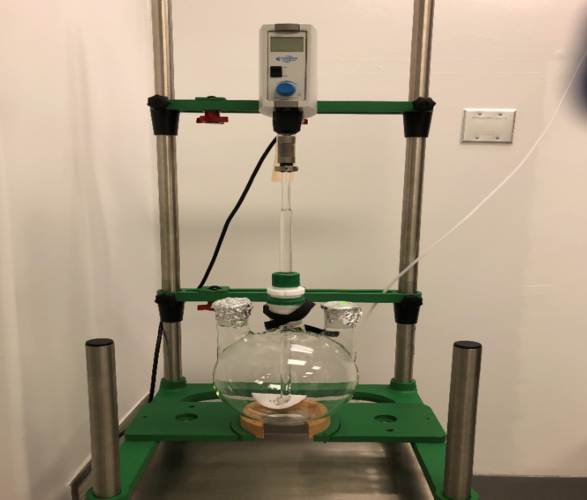
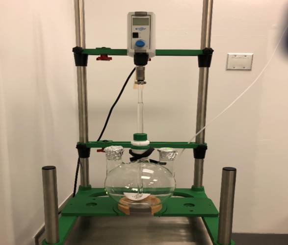
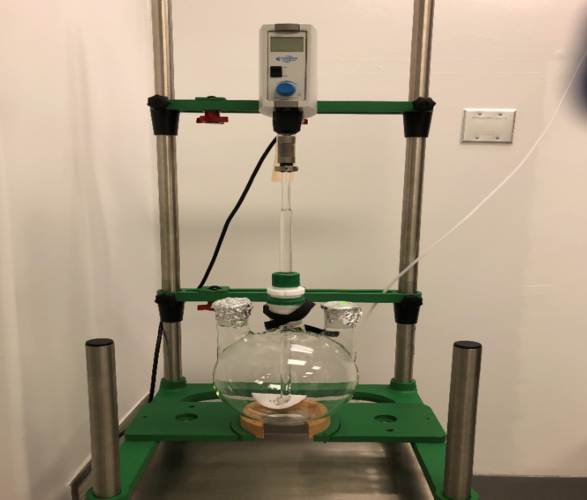

Priyank Patel
My name is Priyank Patel and I’m a third year student at the University of California, Riverside majoring in Biology. Throughout my time at UCR thus far, I’ve been able to hone in on my interests and explore a lot of different fields and topics that interest me. Because of this, I’ve been able to seek out different opportunities to gain more insight on those topics / fields and also gain a lot of professional skills in the process. A lot of this has been done through the use of student clubs on campus.
A lot of the clubs that I’ve joined on campus thus far have been “service” orientated and relate to my career of interest. I’ve joined global public health brigades which gave me a lot of insight of the importance of public health intervention and the positive impact it can have on communities, especially during the pandemic we’re facing right now. Throughout my time in the club, I’ve been able to delve deeper into the public health field and research many sectors of it, such as epidemiology, global health, health and policy management, biostatistics and many more. It helped me gain a deeper understanding of the role public health intervention plays in our society today and influenced my future career goals. With that, I’ve also been able to be on board as the events coordinator and plan different educational events that are public health orientated. This includes hosting public health panels to help members gain a better insight on the field itself, making a “roadmap” activity where people plan out their path to an mph and many more.
I’ve also had the opportunity to be on board for many other clubs as well. I’m currently secretary for R’geospatial. R’geospatial is a club that focuses on educating students about the role GIS (geographic information services) plays in different fields such as public health, ecology, archeology etc. As secretary, I’ve been in charge of creating and sending out weekly newsletters, being in charge of club content and also helping with presentations. Doing this has helped me become more organized, helped me gain good communication skills and also made me more detail orientated. I’ve also been able to gain a lot of skills from the club content itself. As I’m interested in public health, GIS is a valuable tool that’s widely used in the field, especially when it comes to epidemiology (contact tracing is a prime example of this right now). Joining the board of R’geospatial not only helped me develop my professional skills, but the club itself also helped me gain better insight into the field of public health. Another club that I joined that interested me is Gardening Club. I’m the vice president and much like with the role of secretary in R’geospatial and event coordinator in Global Public Health Brigades, I’ve been able to gain a lot of valuable skills from my position such as an ability to think outside the box, good communication skills and great organizational skills. A lot of which I contribute to my passion for the clubs I’m involved in. The skills I’ve gained from these positions have allowed me to branch out and apply them to internships I’ve held, one being at a pharmaceutical company.
Experience
Secretary
• Responsible for making sure all the notes were typed and uploaded, so everyone could access them.
• Made sure the information from each meeting was printed and organized in a binder for reference for future meetings.
• Wrote detailed notes during each meeting
Vice President
• Help make meeting slides and content
• Make sure that there's a direct line of communication between board members and general members
• Make sure board responsibilities are fulfillied
• Help plan out meeting and other club events
Intern
• Learned different lab skills necessary to help complete lab procedures
• Observed different validation procedures conducted by various chemists
• Learned about the different machines / systems used for validation purposes such as HPLC, IC, UHPLC, Karl Fischer, osmometer and how to operate them
• Helped with some validation procedures
Education
UC Riverside
Torrance High School
Portfolio
 

